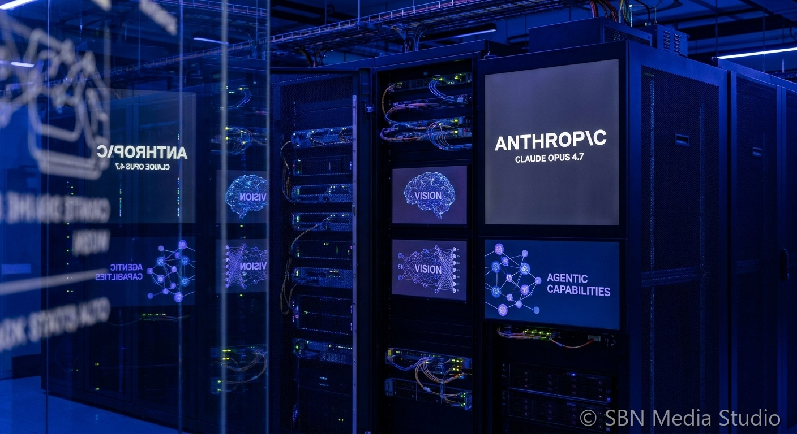

Claude Opus 4.8 Adds Dynamic Workflows + Fast Mode

SAN FRANCISCO, JUNE 1, 2026. Anthropic shipped Claude Opus 4.8 on May 28, 2026, just 41 days after Opus 4.7, headlining the release with a Dynamic Workflows research preview that lets Claude Code plan and run hundreds of parallel subagents and a new Fast Mode tier that trades cost for up to 2.5x output tokens per second.
According to Anthropic's announcement and reporting from TechCrunch and Help Net Security, Opus 4.8 is positioned as a step-change for agentic coding rather than a pure benchmark refresh. Anthropic says the model is roughly 4x less likely than Opus 4.7 to ship code flaws unremarked — meaning the model is materially better at flagging its own uncertainty when it cannot verify a change. Dynamic Workflows, the headline feature inside Claude Code, lets a lead Claude session decompose a large task — a codebase-wide migration, a security audit, a multi-service refactor — into hundreds of subagent jobs that run in parallel with their own context windows, then merge results back into the lead session.
The mechanism reads like a productisation of patterns large engineering teams have been hand-rolling for months. The lead session acts as planner, dispatching short-lived subagents through the same MCP toolchain the parent uses. Each subagent gets a scoped instruction, an isolated context window, and a tight time budget, and reports back with an audit trail the lead session uses to compose a plan-of-record. Anthropic is also exposing Fast Mode at premium pricing — roughly $10 per million input tokens and $50 per million output tokens, versus standard Opus pricing of $5 and $25 — for workloads where wall-clock latency matters more than per-token cost. It is Anthropic's first explicit speed tier on a flagship model and a direct response to OpenAI's GPT-5.5 Instant default.
The consequences hit three audiences. Coding-platform vendors — Cursor, Windsurf, Sourcegraph, plus the wave of agent frameworks — gain a model that handles long-horizon, multi-agent work without the orchestration scaffolding they previously had to bolt on themselves. Enterprise buyers, particularly the consulting firms that have standardized on Claude through alliances like KPMG and PwC, get a clearer path to running codebase-scale migrations as a single Claude job rather than a months-long human program. And competitors are now on a faster cadence: Anthropic has gone Opus 4.6 to 4.7 to 4.8 in roughly three months, a release rhythm that makes it harder for OpenAI's GPT-5.5 and Google's Gemini 3.1 to consolidate any single-quarter lead.
The takeaway is that the frontier model contest has clearly bifurcated. On raw reasoning benchmarks, Opus 4.8, GPT-5.5, and Gemini 3.1 are converging within margin of error. On agentic execution — the ability to plan, parallelize, and audit long-running multi-step work — Anthropic is moving fastest and is being most explicit about the engineering shape of the product. With Mythos-class models also queued for wider release in coming weeks, the next eight weeks will tell whether Anthropic's release tempo is sustainable or whether it pulls the rest of the field into a similarly aggressive cadence.
Sources
Anthropic, TechCrunch, Help Net Security